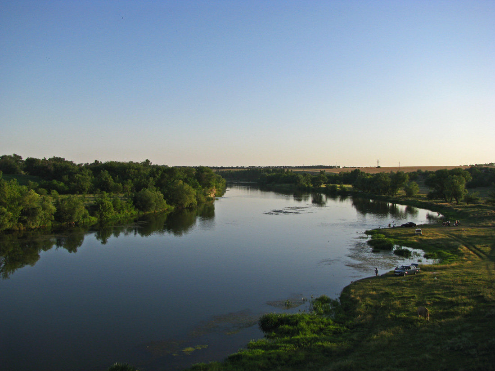

Форма, характер та розмір річок
Річки мають різну форму, розмір і характер водозабезпечення. Залежно від рельєфу, де вони
протікають, їх поділяють на:
-
рівнинні – річки, що пролягають через рівнинні місцевості, де немає перепадів височин;
-
гірські – протікають через гірські регіони, де рельєф характеризується наявністю височин,
стрімких спусків та перепадів ви-
соти;
-
гірсько-рівнинні – це річки, що беруть свій початок у горах і мають гирло в рівнинній
місцевості.
За розміром річки бувають:
-
великими – понад 500 км завдовжки;
-
середніми – від 100 до 500 км;
-
малими – до 100 км.
Найбільші річки України
Перше місце серед найвідоміших та найбільших річок заслужено посідає Дніпро
Це головна
річка України та третя за розміром річка Європи. Протяжність Дніпра складає 2 285 км
Дністер – найдовша річка, яка має витік та гирло в межах України. Її загальна протяжність складає 1
362 км.
Починається Дністер у Карпатах на висоті майже в 1 км біля кордону з Польщею. Перші згадки про Дністер знайдені
в працях Геродота, датованих п’ятим століттям до нашої ери. Давньогрецький історик назвав річку «Тірас», що означає
швидка, дика, неприборкана.
Південний Буг – не менш красива та важлива українська річка. Її довжина складає 806 км. Вона бере
початок із Подільської височини (більш як 320 м) і впадає в Чорне
море через Бузький лиман. Витік Бугу характеризується
болотною місцевістю завширшки в півтора кілометра. Русло (найбільш знижена частина річкової долини)
зовсім не глибоке і
складає всього 20 см. На відстані 400 км від витоку Південний Буг звужується і має максимальну ширину у 200-300 м.
Уздовж річки простягаються
високі каньйони у 20-40 м.

Сіверський Донець вважається головною річкою на сході країни. Її довжина – 1 053 км. Омиває такі міста, як Харків, Донецьк та Луганськ.
Середня ширина річки складає 20-25 м.
Правий берег високий, лівий – пологий.
Найменші водойми України
93 % річок України (а це понад 60 тисяч водойм) відносять до категорії дуже маленьких. Їхня протяжність складає менше за
10 км. Малих річок від 10 км до 100 км сьогодні налі-
чують 3219 шт. Вони є в кожному місті та практично кожному селищі.
Факти про річки України
-
Загальна довжина всіх річок складає 248 000 км. Якщо скласти ці річки по довжині і протягнути їх
екватором, то вони обійдуть навколо Землі більш як 6 разів.
-
В Україні найбільше маленьких струмків, середня довжина яких складає 6-9 км. Середніх річок від
100 км до 500 км близько сотні. А великих, що мають довжину понад 500 км
– тільки 14.
-
Попри те, що Дніпро є найбільшою річкою, він поступається Дунаю за важливою характеристикою –
повноводністю. Дунай має вищий рівень води й постачає більше ресурсів
для промисловості.
-
Найбільше річок в Українських Карпатах, де густота річкової сітки складає 1 км на кілометр
квадратний. А найменше річок у південній частині країни, де щільність річок практи-
чно нульова.
-
Дніпро називали не тільки Борисфеном. У скіфську добу його іменували Славутою, Варосом,
Данапросом та Узом.